Pour faire communiquer deux ordinateurs sur deux réseaux différent via le schema ci-dessous, il vous faudra, Deux VM à cloner pour en avoir quatre au total (dont deux Windows Server 2003 et deux XP)
Schema réseaux ci-dessous :
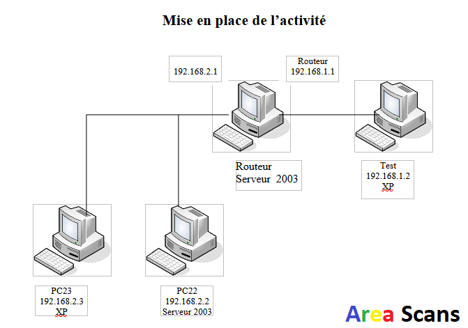
Etapes pour cloner une VM sur VMware WorkStation :
Accèder à la VM que vous voulez cloner et faite un clique droit dessus :
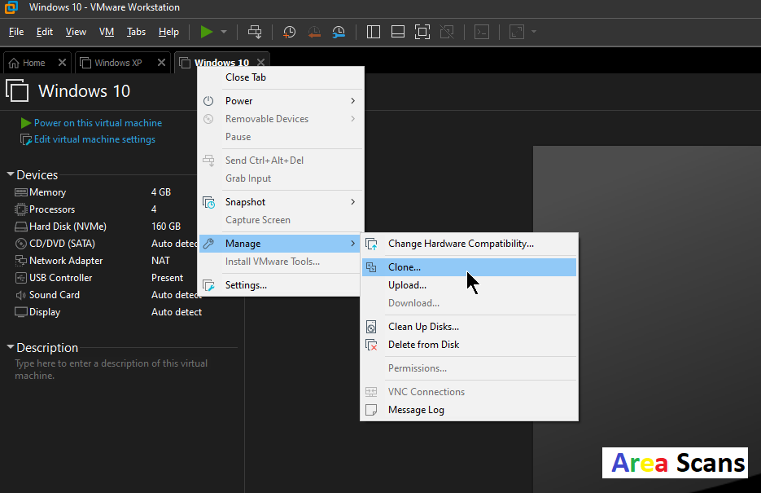
Après avoir cliqué sur "suivant" selectioner "The current state in the virtual machine" :
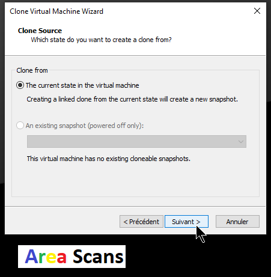
Ensuite cliqué sur "Create a full clone" et sur "Suivant" :
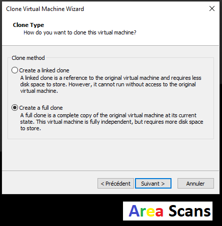
Précisez le nom du clone qui sera "Routeur Server 2003" et son chemin de stockage :
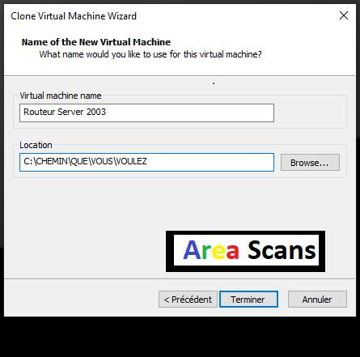
Bravo ! vous avez réussie, maintenant il faut le faire encore une fois pour Windows XP
Nous allons maintenant paramétrer la première VM (Routeur Server 2003) :
/!\ Avant de démarrer assuré vous d'avoir configurer les Lan Segment /!\
Démarrez la VM "Routeur Server 2003" :
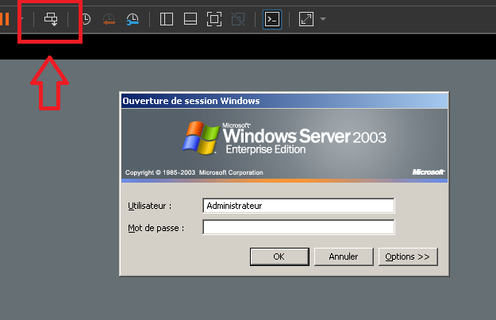
Appuyez pour "Send CTRL+ALT+SUPPR" et appuyée sur OK dans la fenetre Windows (pas de mdp)
Dans "Connexions réseau" vous aurez une seule carte réseau :
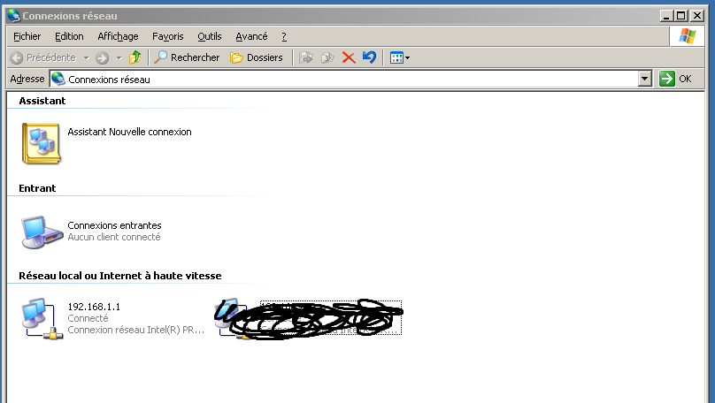
Double cliquez sur la carte => Propriétés => Protocole TCP/IP :
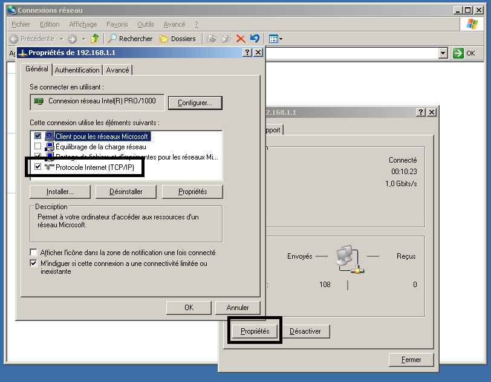
Saisissez l'IP du BON lan segment (pour cette carte c'est de droite) :
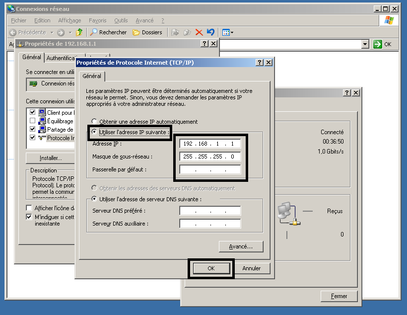
Après avoir rentré les IP, vérifié les paramètre dans le CMD avec ipconfig :
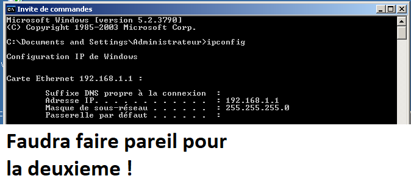
Nous allons ajouté la carte réseau secondaire du serveur :
Cliquez sur "VM" puis "Settings..." :
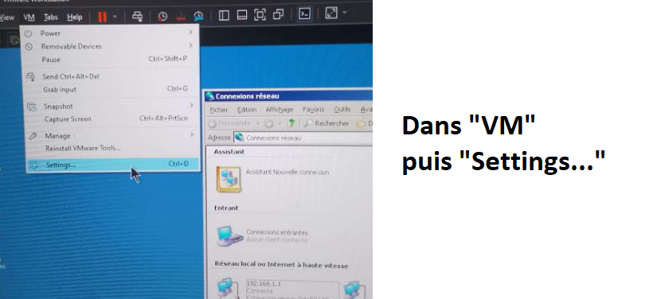
Cliquez sur "Add" puis "Network Adapter" et sur "Finish" :
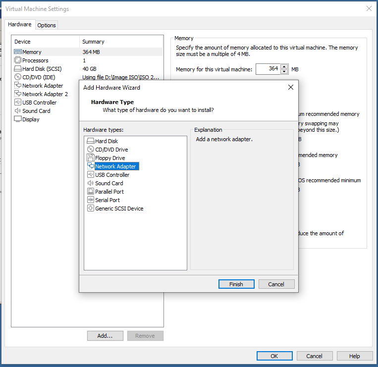
Pour la deuxieme carte réseau, nous allons mettre "à droite"* :
*la première étant déféni sur "à gauche".
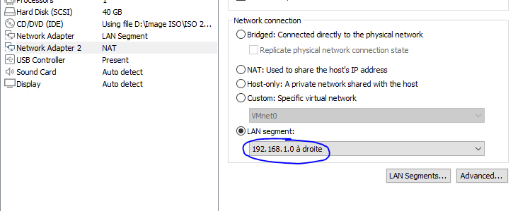
Une deuxieme carte va alors apparaitre dans les connexions réseau :
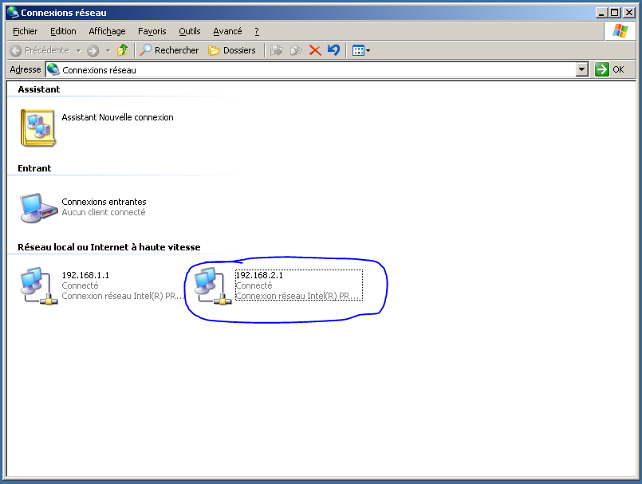
Répété la même étape pour saisir l'ip et le masque :
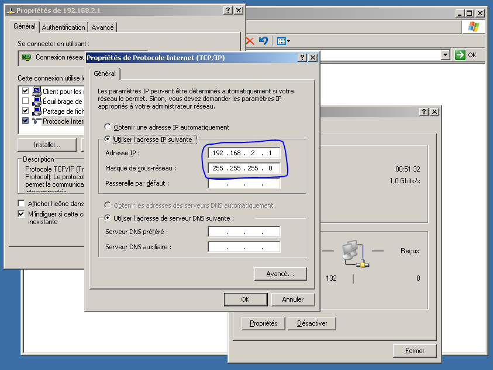
GG, si vous êtes toujours là sans avoir abandonner !
Nous allons maintenant démarrer le service qui permet de faire la liaison entre les deux réseau et donc de pouvoir communiquer entre 192.168.1.1 et 192.168.2.1 en démarrant le service "Routage et accès distant".
Ouvrez "Services" et rechercher "Routage et accès distant" :
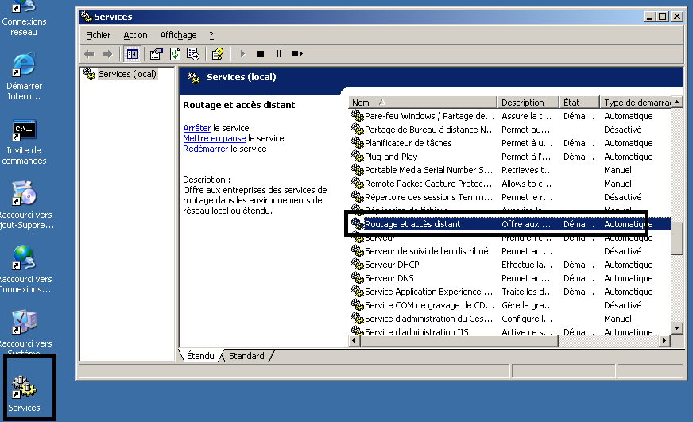
Double cliquez est activé le en mode "automatique" puis "appliquer" et "ok" :
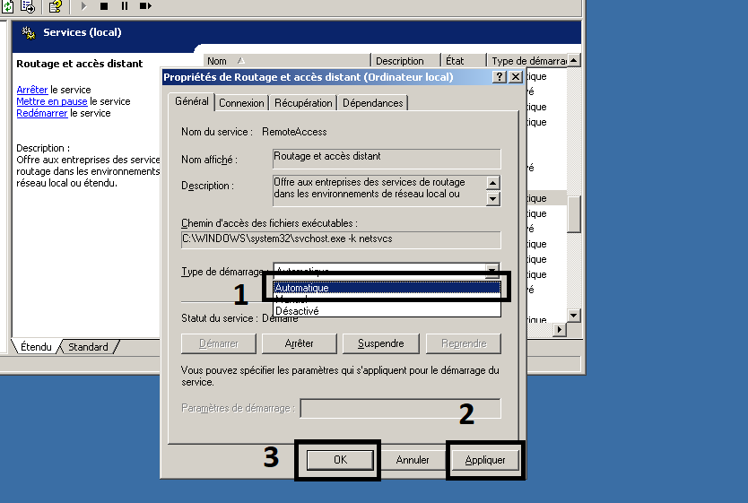
Faite un clique droit et démarré le service si il n'est pas démarré :
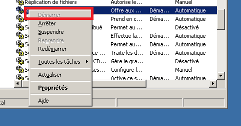
Félicitation, vous avez fini de configurez le "Routeur Serveur 2003" !
Nous allons maintenant configurer les VM Windows XP et 2003 en les mettant dans le bon lan segment pour pouvoir ensuite (voir schema) ping 192.168.2.3 à 192.168.1.2 !
Nous allons configurer PC23 Windows XP qui sera dans le lan segment de gauche.
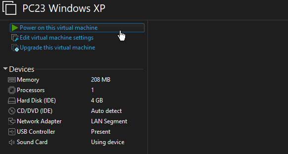
Vous allez saisir l'ip qui corespond au schema, dans notre cas 192.168.2.3 :
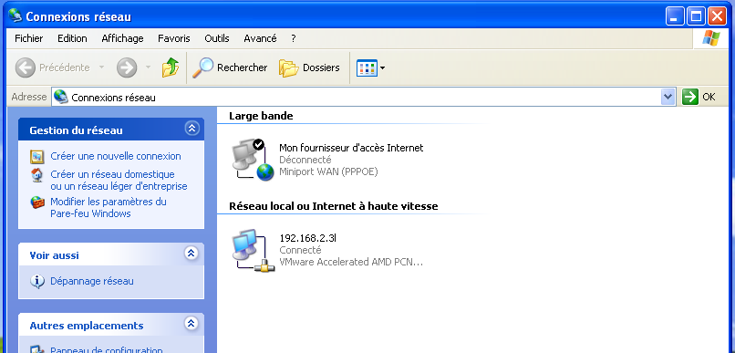
Même procédure que pour le serveur mais avec l'ip corepondant :
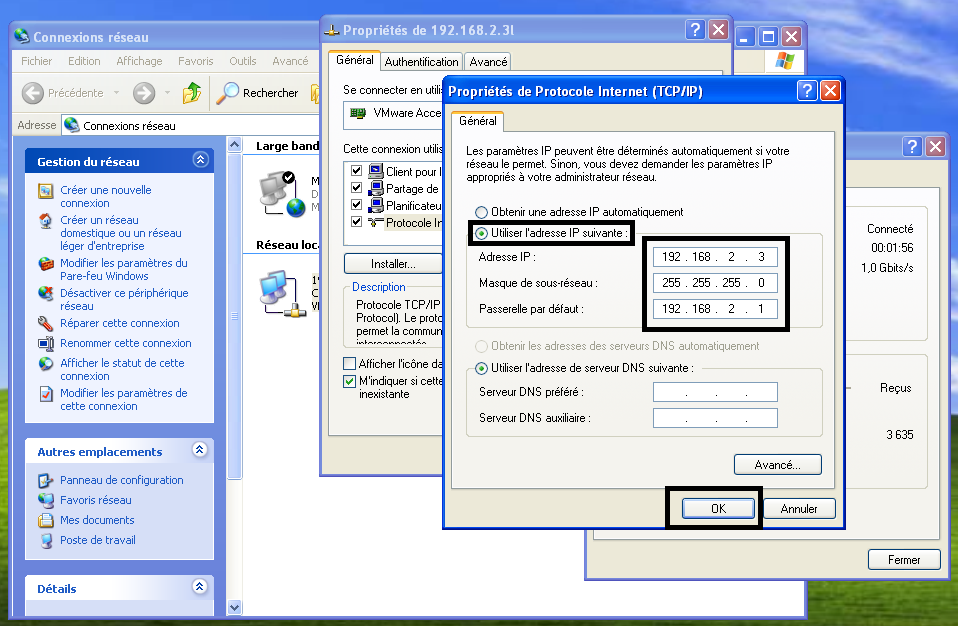
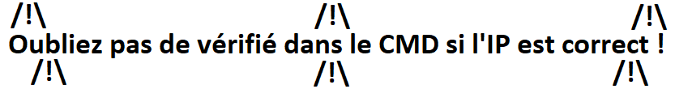
IMPORTANT : pour les VM autre que le "routeur" il faut précisé la passerelle du BON lan segment
Dans notre cas : la passerelle est 192.168.2.1 (précédemment configuré dans le "Routeur Server 2003")
Nous allons faire de même pour un ordinateur du segment de droite :
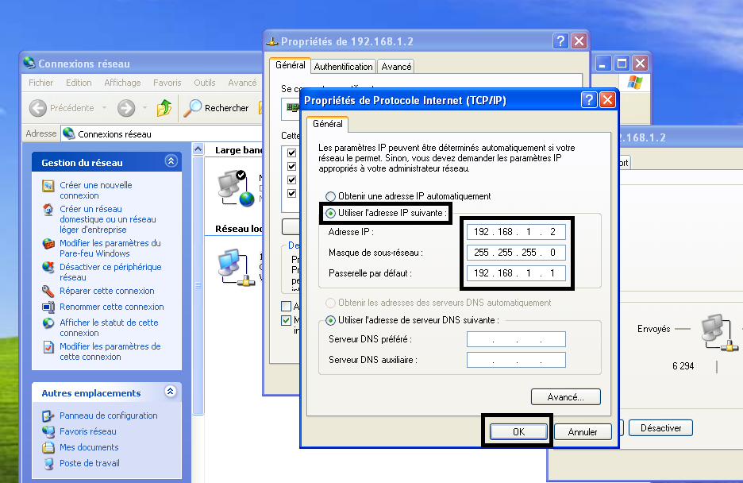
Après cela, nous allons ping l'ordinateur qui à l'ip 192.168.2.3 et cela est une réussite :
La ligne "Réponse de 192.168.2.3 : octets=32 temps=1ms TTL=127" indique la réussite de la requete.
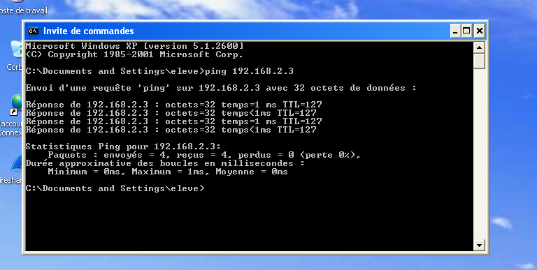
Voici le réseau actuel qui fonctionne :
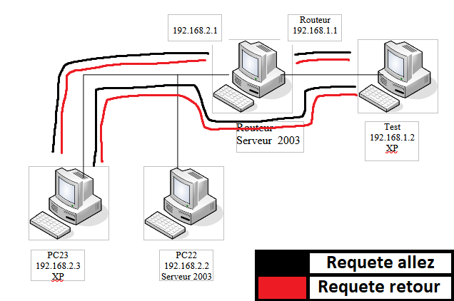
Il vous reste plus qu'a configurez les bonne IP et lan segment pour les autres ordinateurs et tout le réseau sera opérationel !